Physical computing · 3D printing · Arduino
Sprout Lamp
A touch lamp that grows when you touch it
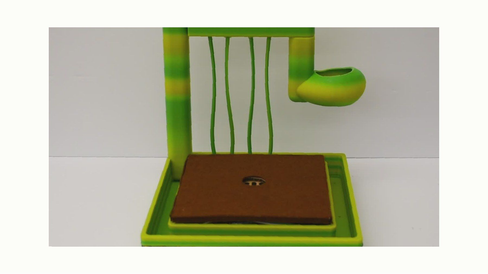
The problem
The brief was to build a working lamp. I wanted the interaction to carry meaning: touching the lamp should feel like encouraging something to grow.
My role
I worked alone on concept, CAD, printing, circuit and code.
Process
Start from growth
Sprouting seedlings inspired the form: vines as supports and a plant pod as the head.
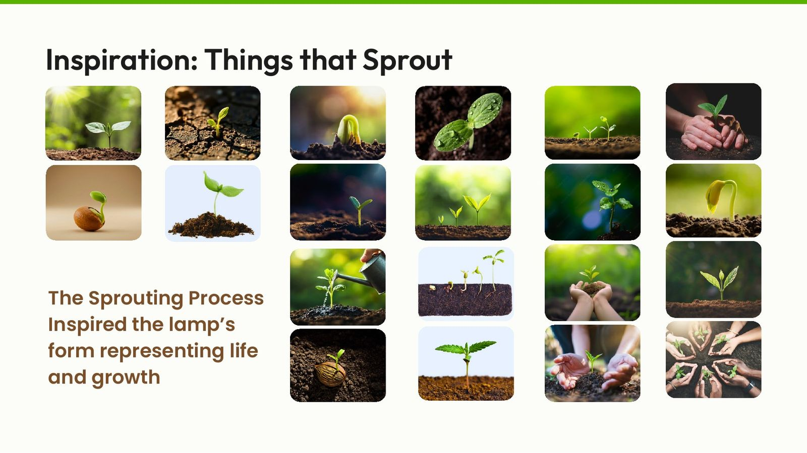
Inspiration: things that sprout 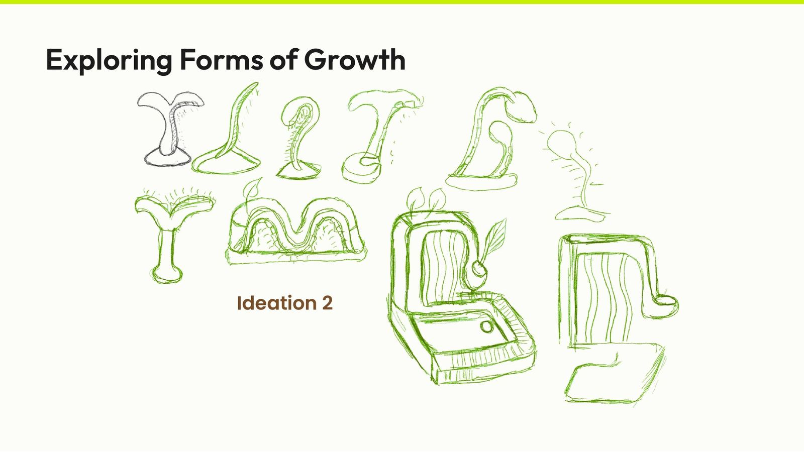
Exploring forms of growth 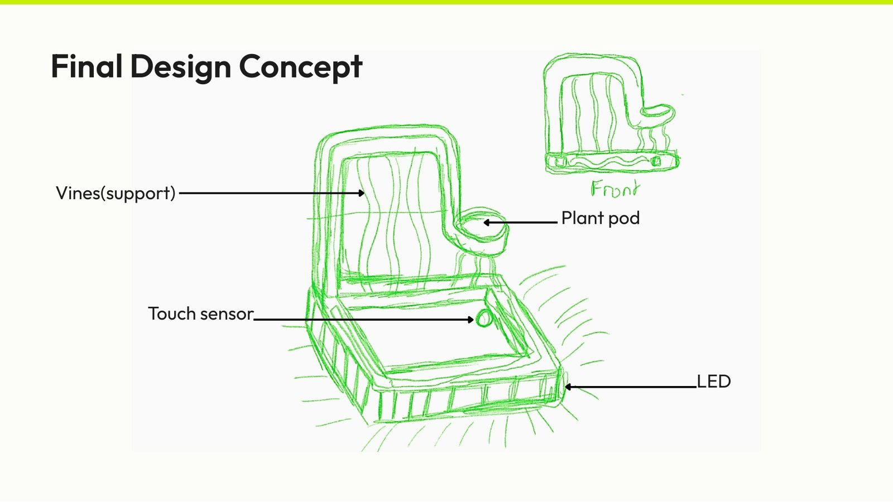
Final design concept Fail, diagnose, fix
My first print wouldn’t adhere to the bed, so I raised the nozzle and bed temperatures for PLA. The thin vines shook against the nozzle, so I reoriented them to print with the body facing the bed.
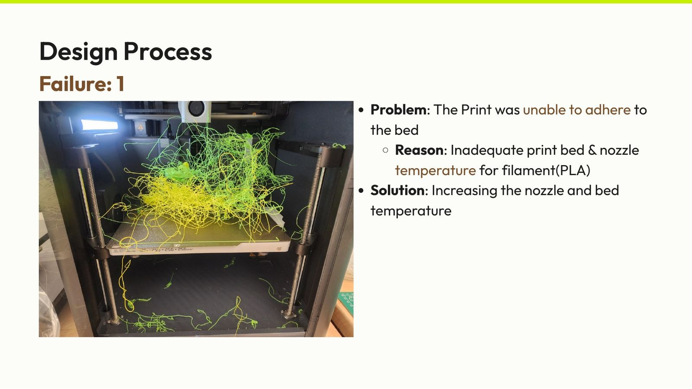
Failure 1: bed adhesion 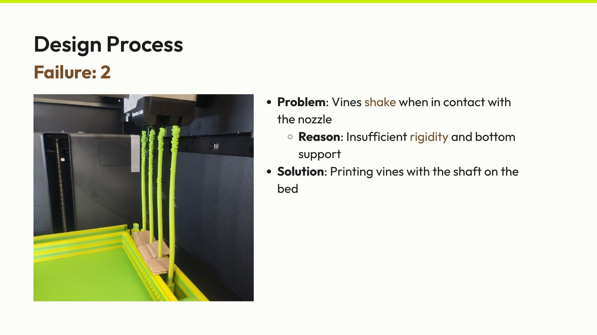
Failure 2: vines shaking 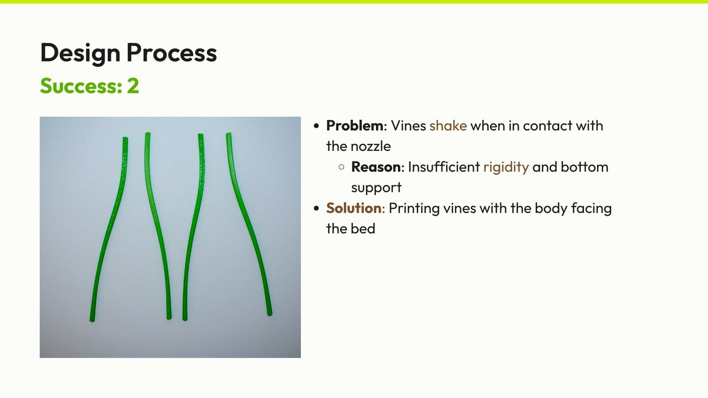
Success: reoriented vines Wire the behavior
A TTP223 touch sensor feeds the Arduino, which drives 51 of the strip’s 60 LEDs through three modes: Off, Sprout and White. I prototyped the circuit in Tinkercad first.
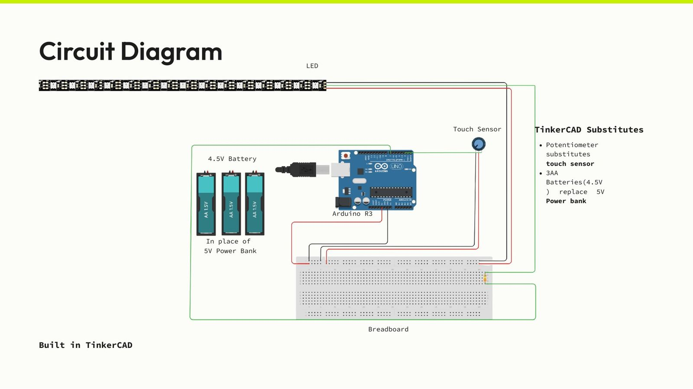
Circuit diagram 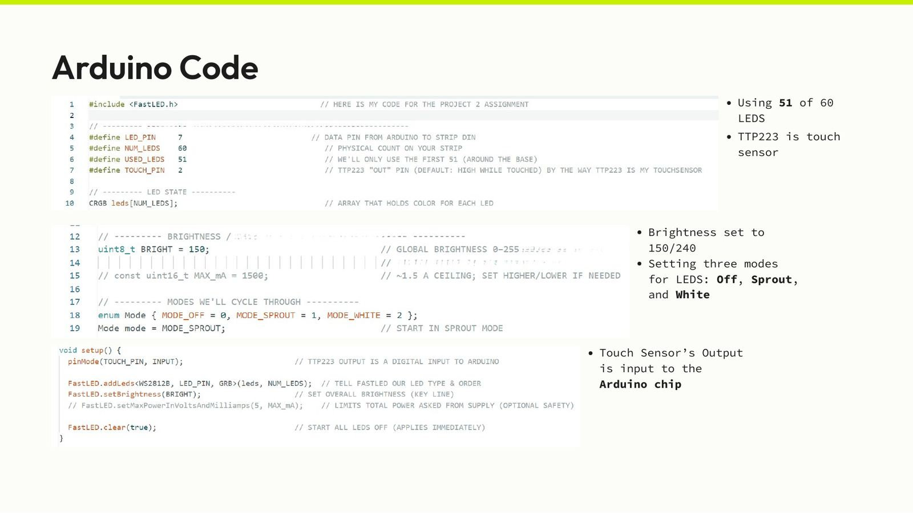
Arduino code
Outcome
The finished lamp cycles through its modes with a touch.
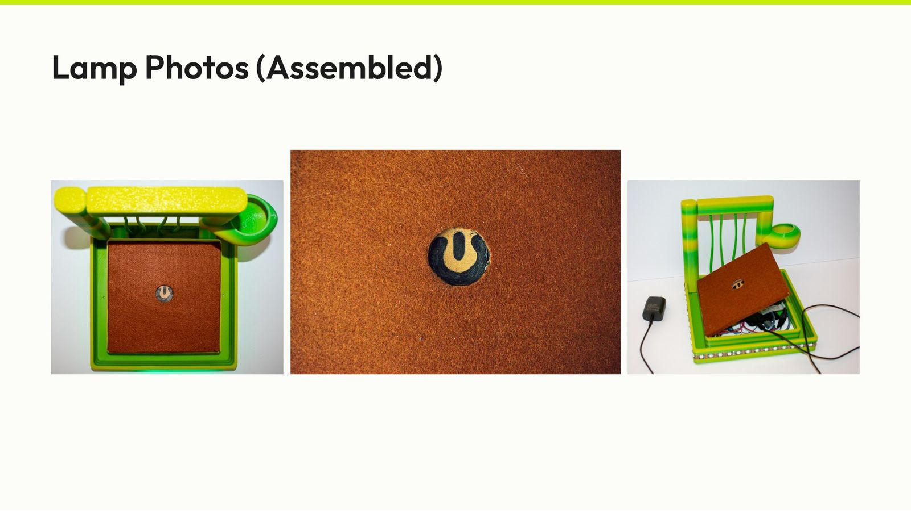
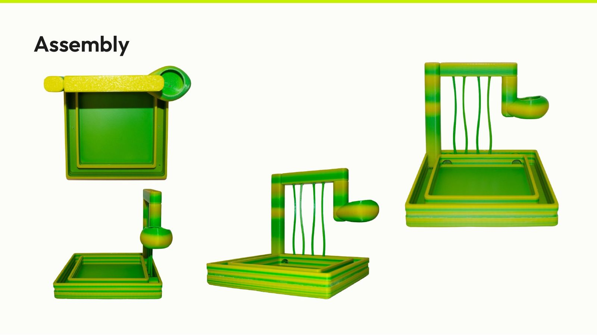